ภาพคอนเซ็ป จากรูปจริงของเรือ + แบบ 3D
ทุกภาพเริ่มจากรูปจริงใน PDF ของเรือ (หรือภาพ 3D ที่สเกลตามเรือจริง) แล้วเติมเฉพาะของตกแต่งที่อยู่ใน BOQ · ห้อง โต๊ะ ราว และวิวเป็นของจริง

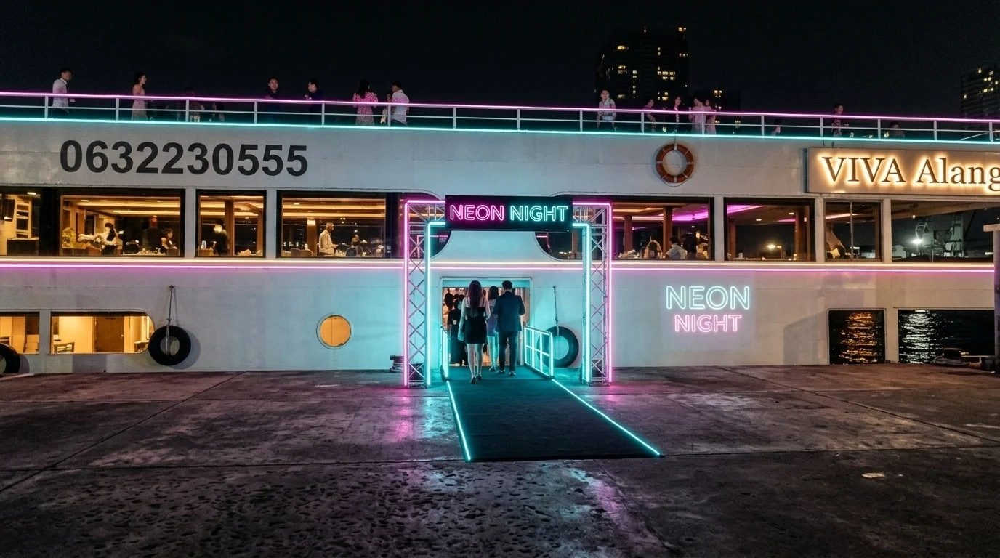

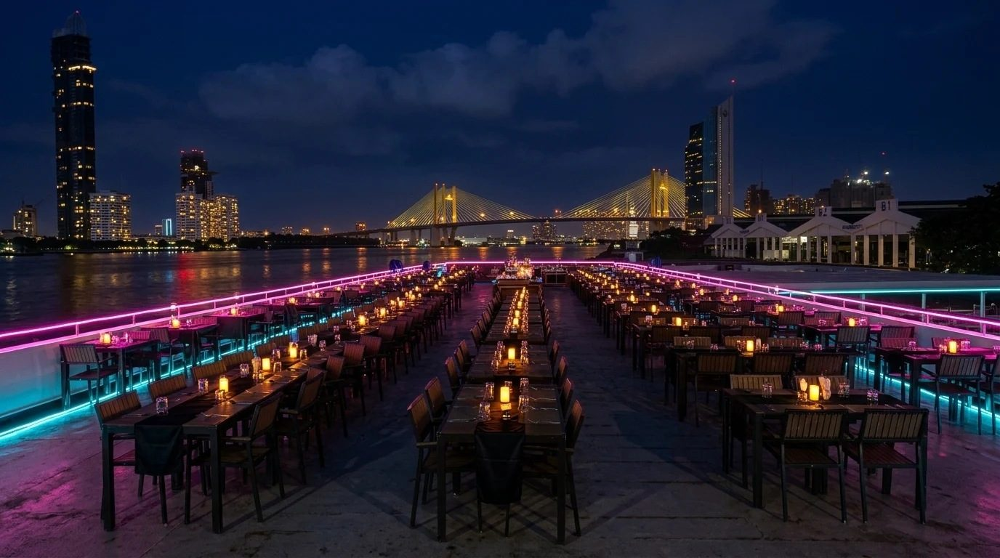

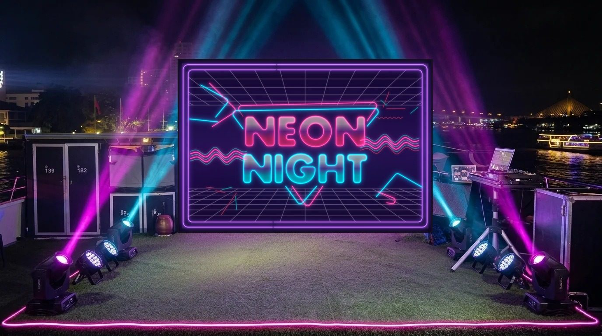

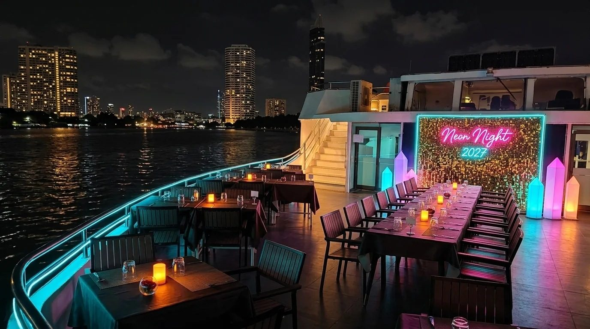

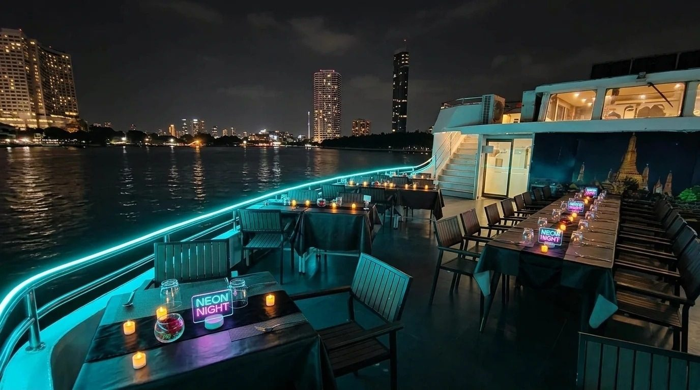

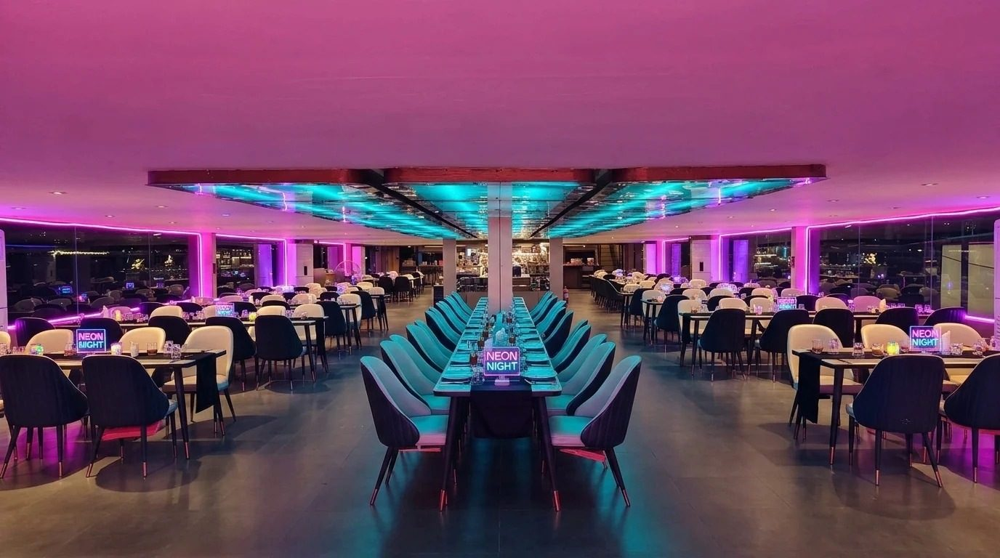

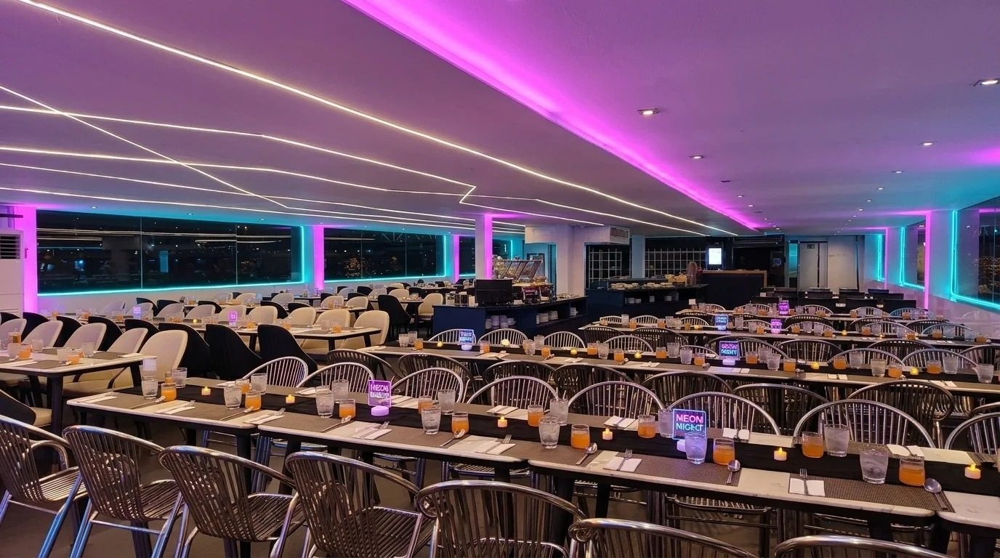
ฉากเวทีดาดฟ้า อิงค์เจ็ท + ฉลุไฟเส้น ไม่ใช้จอ LED
บอร์ด 3 x 2 ม. ตั้งหน้าจอ LED ของเรือ 0.35 ม. (ปิดจอไว้ข้างหลัง) ยอดสูง 2.05 ม. = เท่าจอเรือ จึงลอดสะพานได้ · ใช้กราฟิกชุดเดียวกับที่เคยขึ้นจอ LED: ภาพพิมพ์ทำพื้น ตาราง และหน้าตัวอักษรไล่สี ส่วนเส้นเรืองแสงคือไฟเส้นนีออน 24V ฝังในร่องที่ฉลุทะลุภาพพิมพ์

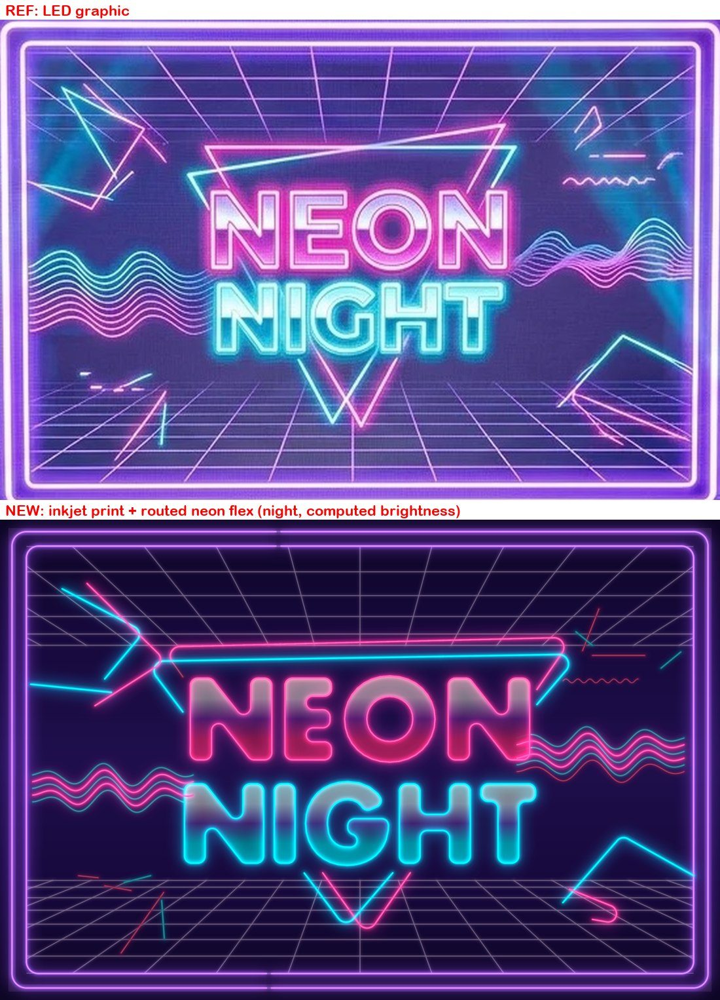

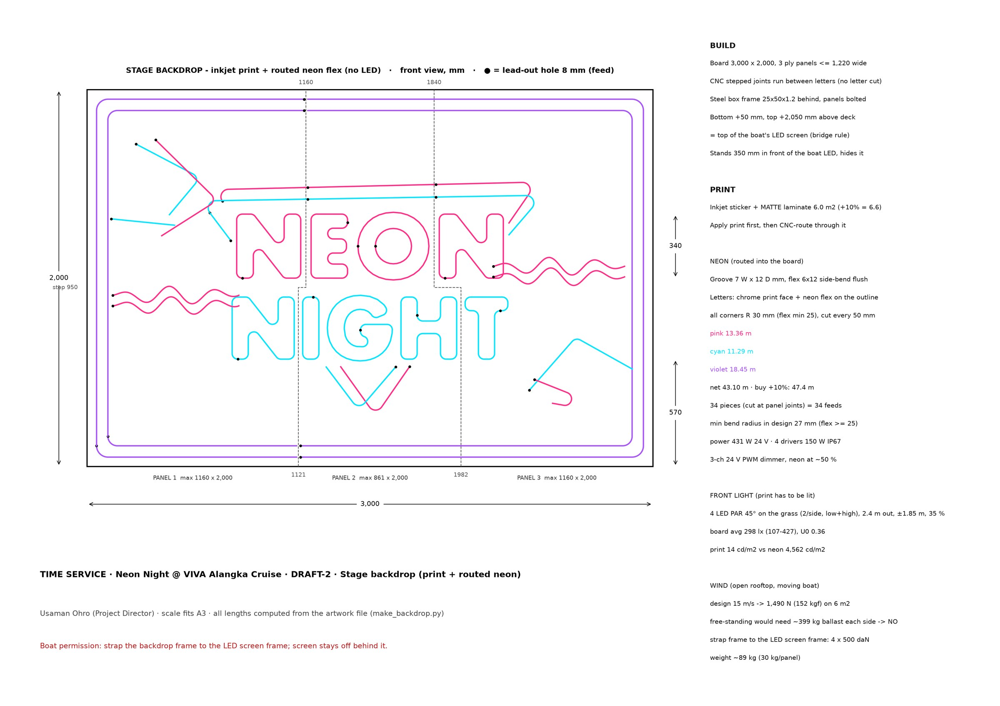
| ภาพพิมพ์ | สติ๊กเกอร์อิงค์เจ็ท + ลามิเนตด้าน 6 ตร.ม. บนไม้อัด 18 มม. 3 แผ่น (กว้างสุด ≤ 1.22 ม.) รอยต่อแบบขั้นบันไดวิ่งระหว่างตัวอักษร ไม่ผ่าตัวอักษร |
| ส่วนที่พิมพ์ (ไม่เรือง) | พื้นม่วง ตารางบน/ล่าง หน้าตัวอักษรไล่สีโครเมียม คลื่นเส้นเสริม เส้นเล็กมุมภาพ + เงาเรืองที่พิมพ์ใต้ไฟเส้นทุกเส้น |
| ส่วนที่เป็นไฟเส้น (เรือง) | ขอบตัวอักษร NEON / NIGHT · สามเหลี่ยมไขว้ชมพู/ฟ้า · คลื่นข้างละ 2 เส้น · ลายมุม 4 มุม · กรอบม่วง 2 ชั้น |
| ฉลุร่อง | CNC ร่อง 7 x ลึก 12 มม. ยาว 43.1 ม. |
| ไฟเส้นนีออน 24V 6x12 | ชมพู 13.36 ม.ฟ้า 11.29 ม.ม่วง 18.45 ม. รวม 43.1 ม. · 34 ชิ้น · มุมโค้ง R 30 มม. (ไฟเส้นงอได้ ≥ 25) |
| ไฟฟ้า | 431 W · หม้อแปลง 24V 150W x4 + ดิมเมอร์ 3 ช่อง |
| ไฟส่องภาพพิมพ์ | PAR 45° x4 วางบนหญ้า หรี่ 35% → ภาพเฉลี่ย 298 lx (107-427) |
| ลม (เรือวิ่ง + ลมกระโชก) | 15 ม./วิ → แรง 152 กก. · ตั้งอิสระต้องถ่วงข้างละ ~399 กก. จึงยึดโครงจอ LED ของเรือด้วยสายรัด 4 เส้น |
| น้ำหนัก | ~89 กก. (แผ่นละ ~30 กก.) |

ข้อสมมติ: ภาพพิมพ์สีเข้มสะท้อนแสง 15% · ลม 15 ม./วิ · ต้องขออนุญาตเรือยึดกับโครงจอ

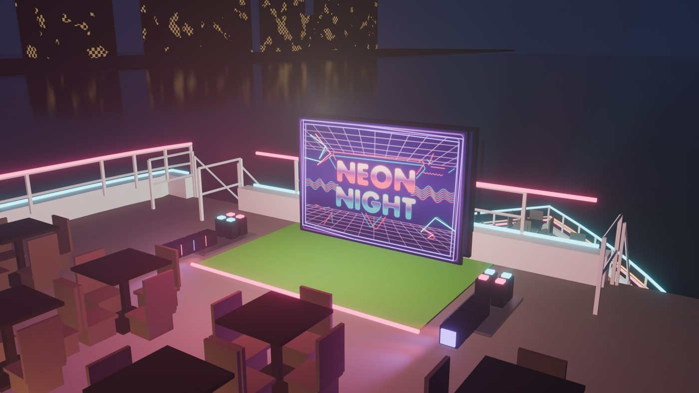

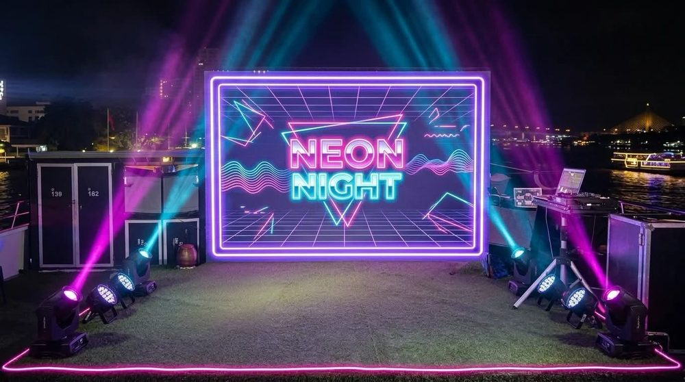
กติกาความสูง: เรือต้องลอดสะพาน
เส้นทางเรือลอดสะพานพุทธซึ่งต่ำที่สุด เราจึงไม่วางทรัสหรือของสูงบนดาดฟ้า ของทุกชิ้นของเราบนดาดฟ้าต้องไม่สูงกว่าจอ LED ของเรือเอง (เรือลอดได้ทุกคืนอยู่แล้ว) · ระบบเช็กแบบ: problems: NONE
| สะพานบนเส้นทาง | ใต้สะพานสูงจากน้ำ |
|---|---|
| กรุงเทพ | 7.5 ม. |
| ตากสิน | 12 ม. |
| พระพุทธยอดฟ้า (สะพานพุทธ) | 7.3-7.5 ม. · น้ำขึ้นหน้าฝน 4.7 ม. |
| พระปิ่นเกล้า | 11.5 ม. |
| พระราม 8 | 10.4 ม. |
| ความสูงในแบบ (จากระดับน้ำ) | ม. |
|---|---|
| พื้นดาดฟ้า | 5.10 |
| ราวดาดฟ้า (เรือ) | 6.20 |
| จอ LED ของเรือ = เพดานของเรา | 7.15 |
| ทรัสเดิม + บีม (ตัดแล้ว) | 8.55 |
| แบ็คดรอปทอง (หัวเรือชั้น 2) | 4.60 |
ที่มา: Wikipedia (Memorial / Krungthep / Taksin / Phra Pinklao / Rama VIII Bridge), Bangkok Post 2014 (สะพานพุทธเหลือ 4.7 ม. ช่วงน้ำขึ้นหน้าฝน) · งานเดือน พ.ค. เป็นหน้าแล้ง แต่ต้องให้กัปตันยืนยันความสูงเรือจริง
แบ็คดรอปทอง 1 ชิ้น + คำนวณแสงจริง
แผงชิมเมอร์ทอง 30x30 ซม. ขนาด 4 x 2 ม. ตั้งที่หัวเรือชั้น 2 ชิดผนังหน้าห้องแอร์ (ใต้ชายคาดาดฟ้า) ข้างละ 3 คริสตัลเรืองแสงแบบงานที่ TIME เคยจัด · ใช้ค่าไฟจาก datasheet จริง: PAR 18x10W 25° = 21,600 lx @1 ม., Beam 7R = 164,230 lx @10 ม., นีออน 10 W/ม.

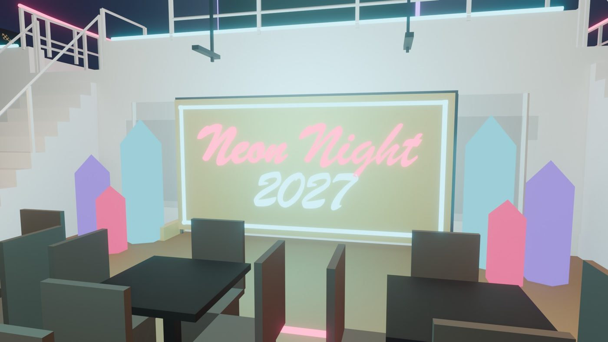

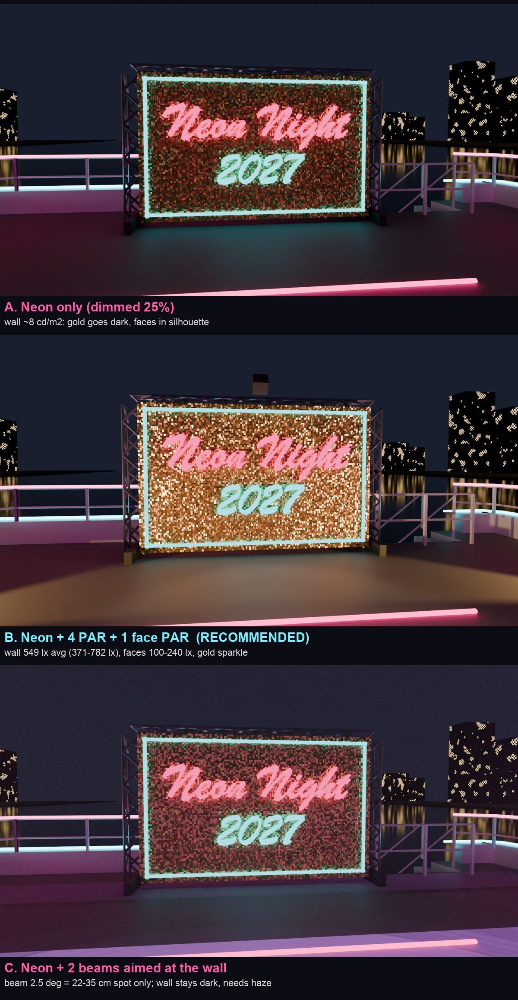
| ไฟส่องผนัง | LED PAR 25° x4 วางพื้นชิดกราบ ฝั่งละ 2 ห่างผนัง 3.2 ม. หรี่ 50% |
| แสงบนผนัง (คำนวณทีละจุด) | เฉลี่ย 458 lx (322-584) · สม่ำเสมอ 0.7 |
| ไฟส่องหน้าคน | LED PAR 45° ขาวอุ่น x2 วางพื้นข้างลานถ่าย หรี่ 12% → หน้าคน 162-198 lx |
| นีออนบนผนัง | 'Neon Night' ชมพู + '2027' ฟ้า + กรอบ 17.5 ม. ดิมเมอร์ 25% ไม่ให้กลบสีทอง |
| สรุป A / B / C | A นีออนอย่างเดียว ทองมืด หน้าคนมืด · B นีออน+PAR สวยที่สุด · C ยิงบีม จุดแสงแค่ 22-35 ซม. แสงสะท้อนแยงตา |
ข้อสมมติ: นีออนสีสว่าง 40% ของสีขาว · สีจริงของ PAR · ค่าสะท้อนของเลื่อมทอง → ขอ datasheet จากร้านมายืนยัน

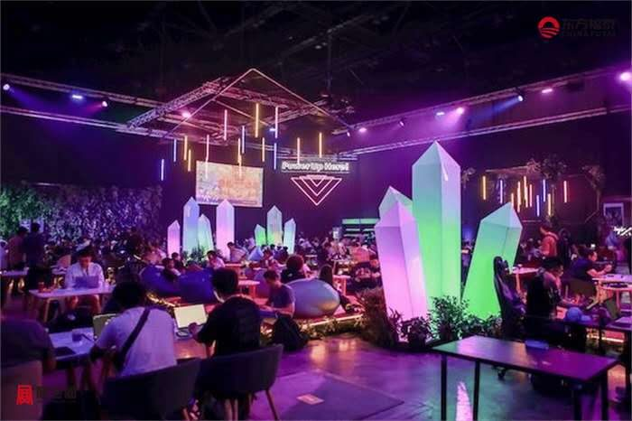

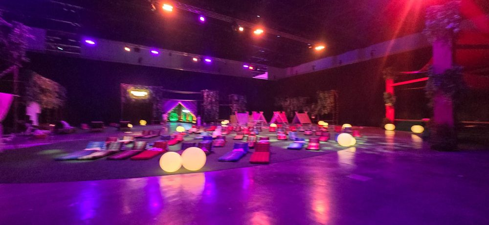
ท่าเรือเอเชียทีค ซุ้มเท่านั้น
ซุ้มทรัส 3x3 ม. นีออนชมพูนอก/ฟ้าใน ป้าย NEON NIGHT · พรมดำ 1.2 ม. ขอบไฟฟ้า · นีออนราวสะพานขึ้นเรือ 5.6 ม. · Gobo 100W ฉาย WELCOME TO NEON NIGHT บนแถบขาวข้างเรือ ภาพกว้าง 2.07 ม. ต้องได้แสง ≥ 1,409 lm · ลูกบอลไฟ LED แบตริมพรม

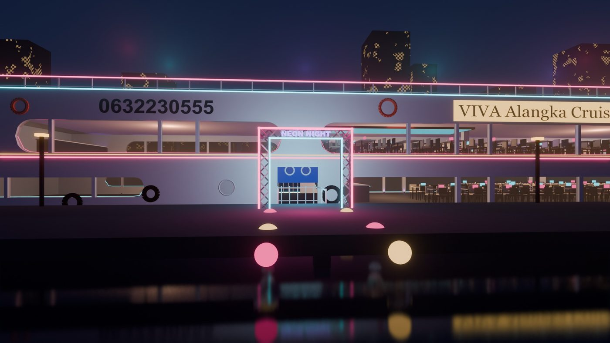
ห้องอาหารแอร์ชั้น 1 และ 2 ฝ้าสูง 2.0 ม. ห้ามแขวน
วางโต๊ะของเรือตามรูปห้องจริง: ชั้น 1 160 ที่ · ชั้น 2 200 ที่ · ตกแต่งด้วยนีออนขอบกระจก ไฟส่องผนังแบต ป้ายนีออนตั้งโต๊ะ เทียน LED กรอบนีออนรอบจอ และขอให้เรือปรับไฟฝ้าเป็นชมพู/ม่วง
แบบ 3D ตามเรือจริง
วัดสัดส่วนจากรูปด้านข้างใน PDF ของเรือ (28.9 px/ม.) แล้วเทียบกับ 3D ซ้ำจนตรง · ใช้เป็นตัวคุมขนาดและจำนวนวัสดุทั้งหมด

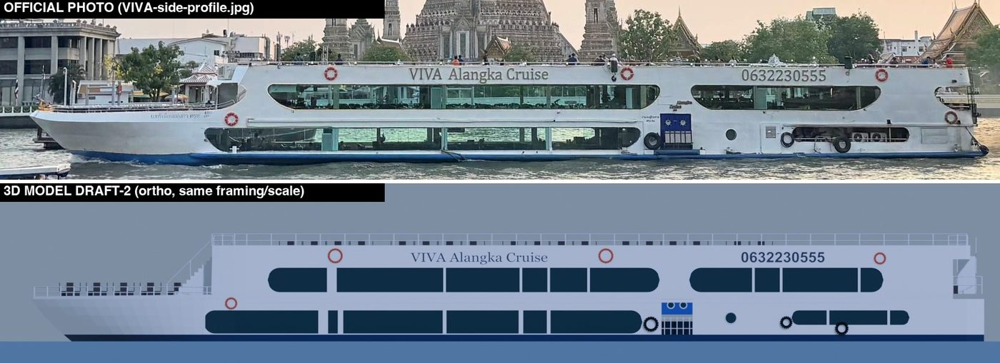

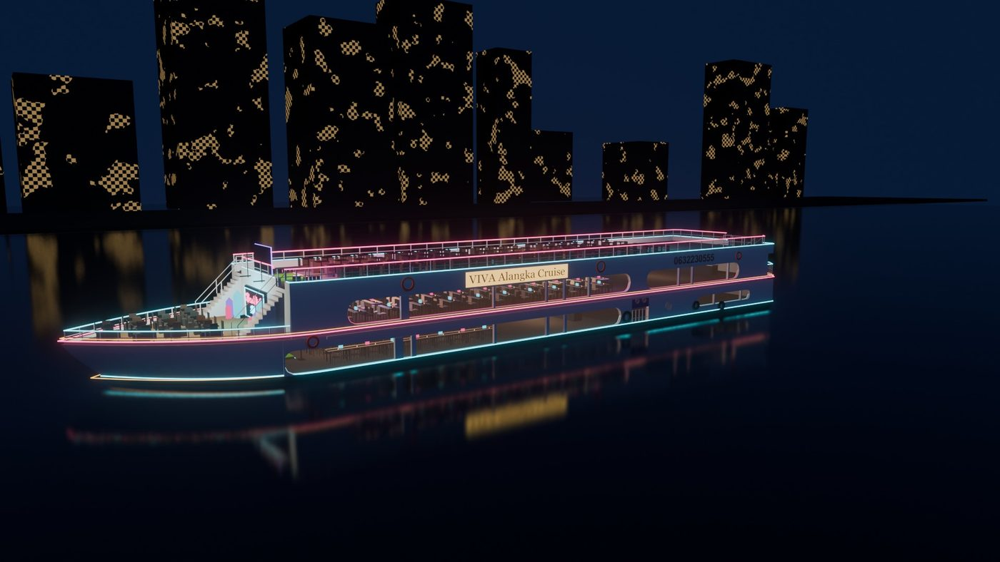

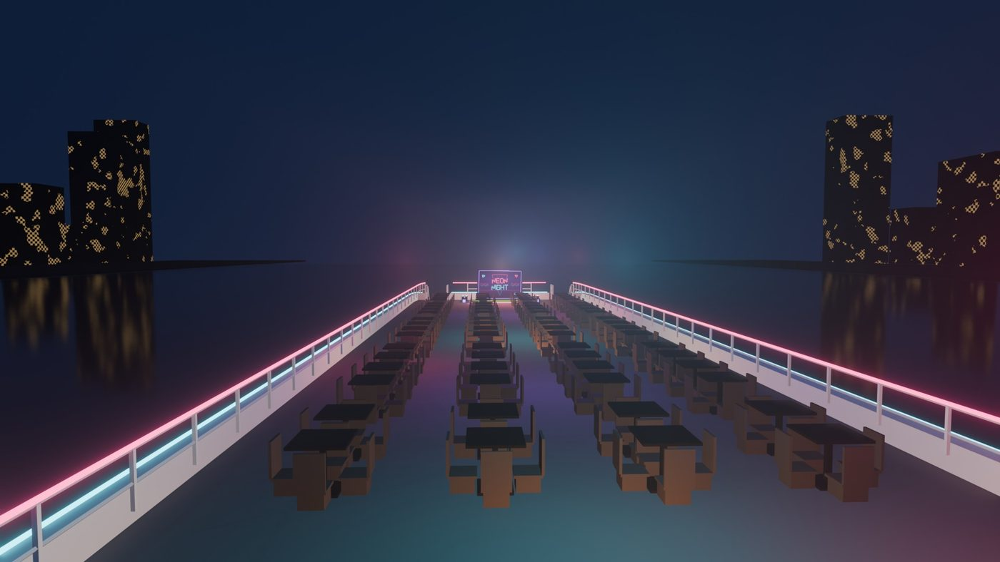

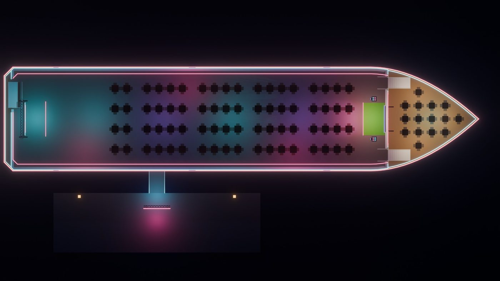

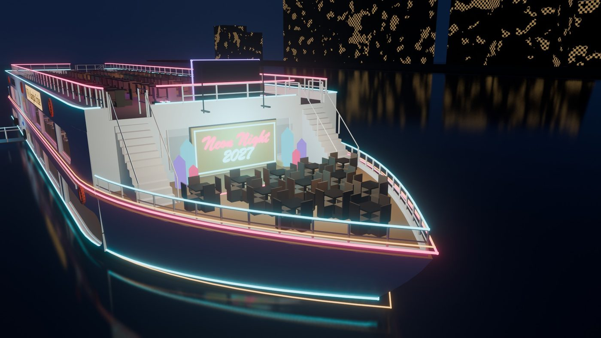

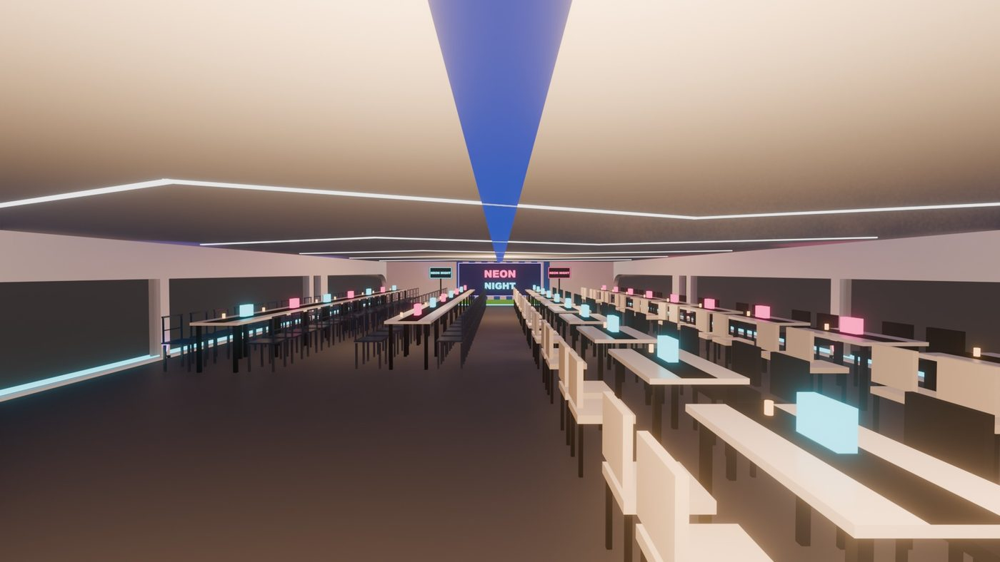

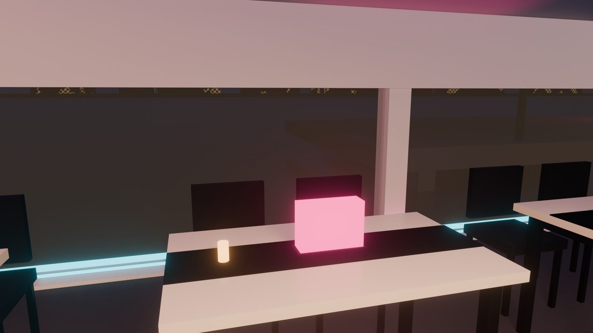

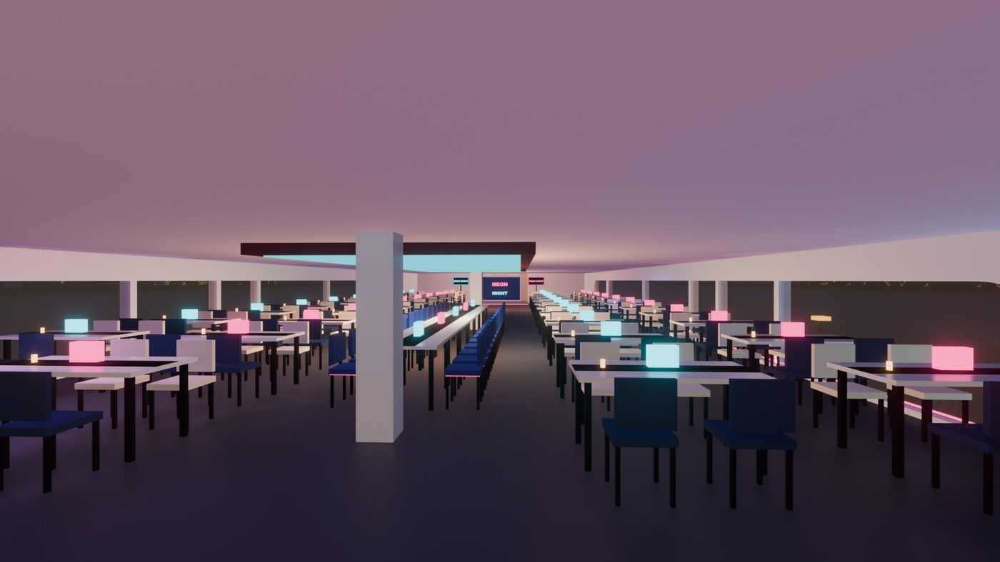

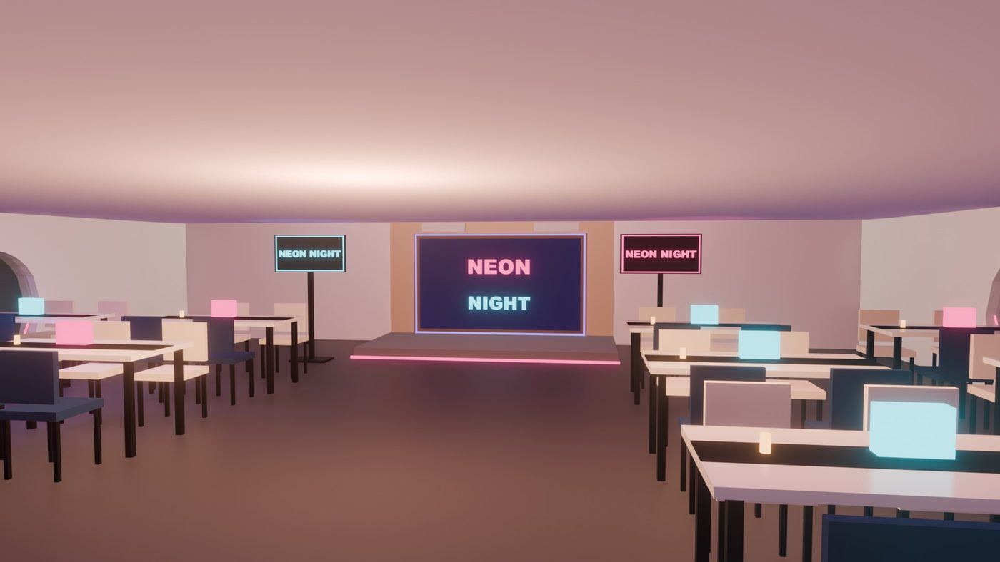

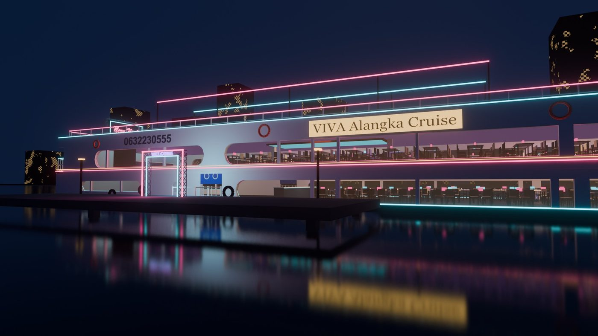
แบบผังและด้านข้าง กดเพื่อขยาย

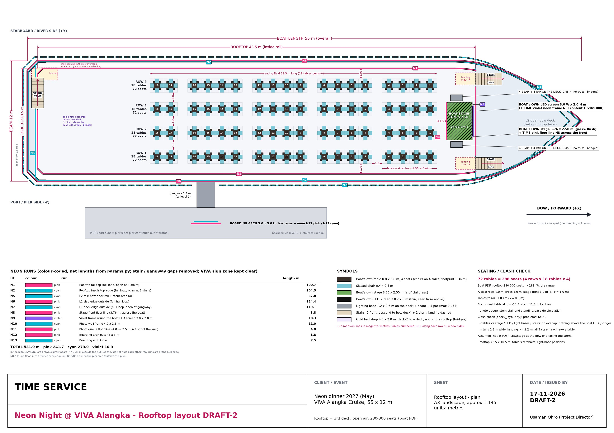

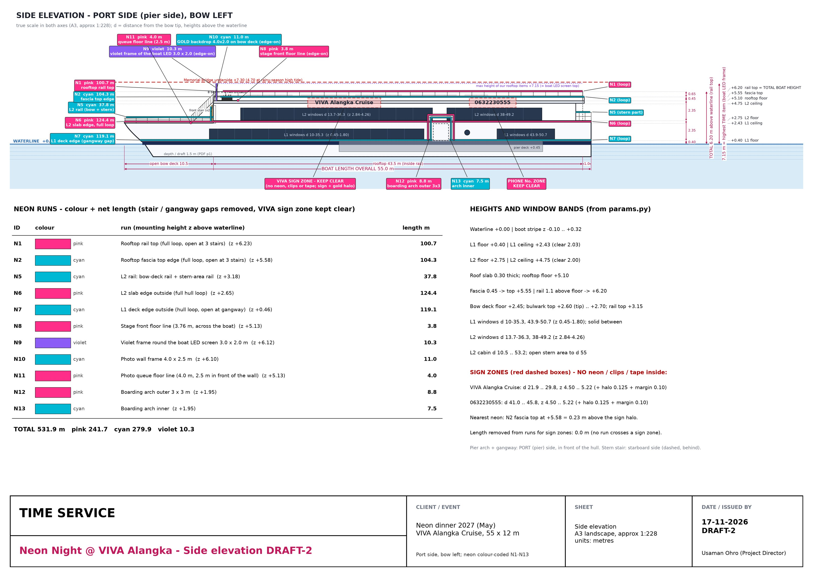
BOQ ถอดปริมาณวัสดุ DRAFT-2 · ยังไม่มีราคา
ทุกจำนวนคำนวณจากแบบ (params.py / neon_runs.py / interiors.py) · ราคาจะใช้ราคาที่ TIME เคยขายจริงก่อน รายการที่ไม่มีราคาเก่าจะขอราคาร้าน
ดาวน์โหลด BOQ (.xlsx)| หมวด | รายการ | สเปก | สุทธิ | เผื่อ | สั่ง | หน่วย | ที่มา/สูตร |
|---|---|---|---|---|---|---|---|
| 1. ไฟนีออนเส้น (LED Neon Flex 220V 8x16 มม. ม้วน 50 ม. ตัดได้ทุก 1 ม.) | |||||||
| A ดาดฟ้า | ราวกันตกดาดฟ้า (ขอบบนราว) รอบ 43.5x10.5 ม. เว้นช่องบันได 3 จุด [ชมพู] | หนีบราว | 100.7 | 10% | 110.8 | ม. | ปลั๊กเข้าไฟ 3 จุด · คลิป/เคเบิลไทร์ 202 ตัว · 906 W · เว้นช่องบันได/ทางขึ้น 6.3 ม. |
| A ดาดฟ้า | ขอบบนแถบขาว (fascia) ดาดฟ้า ด้านนอก เว้นช่องบันได 3 จุด · เหนือป้าย VIVA [ฟ้า] | หนีบ/รัดขอบบนแถบขาว | 104.3 | 10% | 114.8 | ม. | ปลั๊กเข้าไฟ 3 จุด · คลิป/เคเบิลไทร์ 209 ตัว · 939 W · เว้นช่องบันได/ทางขึ้น 6.0 ม. |
| B ตัวเรือ | ราวกันตกชั้น 2 (ราวหัวเรือ + ราวท้ายเรือ) [ฟ้า] | หนีบราว | 37.8 | 10% | 41.6 | ม. | ปลั๊กเข้าไฟ 1 จุด · คลิป/เคเบิลไทร์ 76 ตัว · 340 W |
| B ตัวเรือ | ขอบพื้นชั้น 2 ด้านนอก รอบลำ [ชมพู] | รัดขอบ (ขออนุญาตเรือ) | 124.4 | 10% | 136.8 | ม. | ปลั๊กเข้าไฟ 3 จุด · คลิป/เคเบิลไทร์ 249 ตัว · 1120 W |
| B ตัวเรือ | ขอบพื้นชั้น 1 ด้านนอก รอบลำ (เว้นช่องทางขึ้น) [ฟ้า] | รัดขอบ (ขออนุญาตเรือ) | 119.1 | 10% | 131.1 | ม. | ปลั๊กเข้าไฟ 3 จุด · คลิป/เคเบิลไทร์ 239 ตัว · 1072 W · เว้นช่องบันได/ทางขึ้น 2.0 ม. |
| C เวที | ขอบหน้าพื้นหญ้าเวทีเรือ (เส้นพื้น) [ชมพู] | รางกันเหยียบ+เทปพื้น | 3.8 | 10% | 4.1 | ม. | ปลั๊กเข้าไฟ 1 จุด · คลิป/เคเบิลไทร์ 8 ตัว · 34 W |
| E โฟโต้โซน | กรอบผนังโฟโต้ [ฟ้า] | รัดกับทรัส | 11 | 10% | 12.1 | ม. | ปลั๊กเข้าไฟ 1 จุด · คลิป/เคเบิลไทร์ 23 ตัว · 99 W |
| E โฟโต้โซน | เส้นไฟพื้นจุดยืนถ่าย [ชมพู] | รางกันเหยียบ+เทปพื้น | 4 | 10% | 4.4 | ม. | ปลั๊กเข้าไฟ 1 จุด · คลิป/เคเบิลไทร์ 8 ตัว · 36 W |
| F ท่าเรือ | ซุ้มทรัส 3x3 ม. เส้นนอก [ชมพู] | รัดกับทรัส | 8.8 | 10% | 9.7 | ม. | ปลั๊กเข้าไฟ 1 จุด · คลิป/เคเบิลไทร์ 18 ตัว · 80 W |
| F ท่าเรือ | ซุ้มทรัส 3x3 ม. เส้นใน [ฟ้า] | รัดกับทรัส | 7.5 | 10% | 8.3 | ม. | ปลั๊กเข้าไฟ 1 จุด · คลิป/เคเบิลไทร์ 16 ตัว · 68 W |
| G ห้องแอร์ชั้น 1 | ขอบล่างกระจกด้านใน ทั้ง 2 ฝั่ง [ฟ้า] | เทป 3M + คลิปขอบหน้าต่าง | 64.2 | 10% | 70.6 | ม. | ปลั๊กเข้าไฟ 2 จุด · คลิป/เคเบิลไทร์ 129 ตัว · 578 W |
| G ห้องแอร์ชั้น 1 | กรอบจอ LED ของเรือ [ม่วง] | รัดกับกรอบจอ (ขออนุญาตเรือ) | 10.8 | 10% | 11.9 | ม. | ปลั๊กเข้าไฟ 1 จุด · คลิป/เคเบิลไทร์ 22 ตัว · 97 W |
| G ห้องแอร์ชั้น 1 | เส้นพื้นขอบหน้าเวทีเรือ [ฟ้า] | รางกันเหยียบ+เทปพื้น | 4.2 | 10% | 4.6 | ม. | ปลั๊กเข้าไฟ 1 จุด · คลิป/เคเบิลไทร์ 9 ตัว · 38 W |
| G ห้องแอร์ชั้น 1 | ขอบหน้าเคาน์เตอร์บุฟเฟ่ต์ [ฟ้า] | เทป 3M | 6 | 10% | 6.6 | ม. | ปลั๊กเข้าไฟ 1 จุด · คลิป/เคเบิลไทร์ 12 ตัว · 54 W |
| G ห้องแอร์ชั้น 2 | ขอบล่างกระจกด้านใน ทั้ง 2 ฝั่ง [ชมพู] | เทป 3M + คลิปขอบหน้าต่าง | 67.6 | 10% | 74.4 | ม. | ปลั๊กเข้าไฟ 2 จุด · คลิป/เคเบิลไทร์ 136 ตัว · 608 W |
| G ห้องแอร์ชั้น 2 | กรอบจอ LED ของเรือ [ม่วง] | รัดกับกรอบจอ (ขออนุญาตเรือ) | 8.2 | 10% | 9.1 | ม. | ปลั๊กเข้าไฟ 1 จุด · คลิป/เคเบิลไทร์ 17 ตัว · 74 W |
| G ห้องแอร์ชั้น 2 | เส้นพื้นขอบหน้าเวทีเรือ [ชมพู] | รางกันเหยียบ+เทปพื้น | 3.6 | 10% | 4 | ม. | ปลั๊กเข้าไฟ 1 จุด · คลิป/เคเบิลไทร์ 8 ตัว · 32 W |
| รวม | ไฟนีออนเส้น ทั้งหมด | 686 | 10% | 754.6 | ม. | ||
| สั่งซื้อ | ม้วนนีออน สีชมพู | 50 ม./ม้วน | 344.2 | 7 | ม้วน | ปัดขึ้นเต็มม้วน | |
| สั่งซื้อ | ม้วนนีออน สีฟ้า | 50 ม./ม้วน | 389.7 | 8 | ม้วน | ปัดขึ้นเต็มม้วน | |
| สั่งซื้อ | ม้วนนีออน สีม่วง | 50 ม./ม้วน | 21 | 1 | ม้วน | ปัดขึ้นเต็มม้วน | |
| อุปกรณ์ | หัวปลั๊ก+ฝาปิดท้าย (ชุดต่อไฟต่อเส้น) | IP65 | 27 | +4 | 31 | ชุด | 1 ชุด/ทุก 50 ม. |
| อุปกรณ์ | คลิปยึด/เคเบิลไทร์ UV | ดำ | 1,381 | 10% | 1,520 | ตัว | ราว 2 ตัว/ม. · สลิง 3 ตัว/ม. |
| อุปกรณ์ | สายไฟพ่วง VCT 3x2.5 + ปลั๊กกันน้ำ | 10 ม./เส้น | 27 | 27 | เส้น | 1 เส้น/จุดเข้าไฟ | |
| 2. เวที + ฉากหลัง | |||||||
| เวที | ใช้เวทีของเรือ (พื้นหญ้าเทียม) + จอ LED ของเรือ | เวที 3.76 x 2.5 ม. · จอ 3.0 x 2.0 ม. | 0 | 0 | - | PDF ข้อมูลเรือ หน้า 6, 9 - ไม่ต้องสร้าง | |
| ฉากเวทีดาดฟ้า | บอร์ดพิมพ์อิงค์เจ็ท สติ๊กเกอร์ + ลามิเนตด้าน บนไม้อัด 18 มม. (ไม่ใช้จอ LED) | 3.0 x 2.0 ม. · 3 แผ่น 0.89/1.22/0.89 ม. | 6 | 10% | 6.6 | ตร.ม. | 07_stage-backdrop/print-file_3000x2000mm.pdf (ไฟล์พิมพ์ 1:1) |
| ฉากเวทีดาดฟ้า | ฉลุร่องไฟเส้น CNC ทะลุภาพพิมพ์ | ร่อง 7 x ลึก 12 มม. | 43.1 | 43.1 | ม. | ยาวเท่าไฟเส้นในแบบ (cut-drawing.png) | |
| ฉากเวทีดาดฟ้า | ไฟเส้นนีออน 24V 6x12 ด้านข้าง ชมพู กดฝังร่อง | 10 W/ม. ตัดทุก 50 มม. งอได้ R>=25 มม. IP67 | 13.4 | 10% | 14.7 | ม. | fossLED NEON 0612 datasheet |
| ฉากเวทีดาดฟ้า | ไฟเส้นนีออน 24V 6x12 ด้านข้าง ฟ้า กดฝังร่อง | 10 W/ม. ตัดทุก 50 มม. งอได้ R>=25 มม. IP67 | 11.3 | 10% | 12.4 | ม. | fossLED NEON 0612 datasheet |
| ฉากเวทีดาดฟ้า | ไฟเส้นนีออน 24V 6x12 ด้านข้าง ม่วง กดฝังร่อง | 10 W/ม. ตัดทุก 50 มม. งอได้ R>=25 มม. IP67 | 18.4 | 10% | 20.3 | ม. | fossLED NEON 0612 datasheet |
| ฉากเวทีดาดฟ้า | หัวต่อไฟเข้า + ฝาท้าย (ไฟเส้น 24V) | ตัดที่รอยต่อแผ่น 1 ชุด/ชิ้น | 34 | +4 | 38 | ชุด | 34 ชิ้นตามแบบ |
| ฉากเวทีดาดฟ้า | หม้อแปลง 24V 150W IP67 + ดิมเมอร์ PWM 3 ช่อง | 431 W ที่ 24V | 4 | 4 | ตัว | โหลดไม่เกิน 80% | |
| ฉากเวทีดาดฟ้า | โครงเหล็กกล่อง 25x50 หลังบอร์ด + ค้ำยึดกับโครงจอ LED ของเรือ | ลมออกแบบ 15 ม./วิ = 152 กก. | 1 | 1 | ชุด | ตั้งอิสระต้องถ่วงข้างละ ~399 กก. -> ยึดโครงจอแทน (ขออนุญาตเรือ) | |
| ฉากเวทีดาดฟ้า | สายรัด ratchet 500 daN | 4 | 4 | เส้น | แรงต่อเส้น ~484 N | ||
| ฉากเวทีดาดฟ้า | LED PAR 18x10W เลนส์ 45° ส่องภาพพิมพ์ วางบนหญ้า | หรี่ 35% · ภาพเฉลี่ย 298 lx | 4 | 4 | ตัว | ภาพพิมพ์ไม่เรืองแสงเอง ต้องมีไฟส่อง | |
| จอ | ไฟล์ภาพธีมนีออนขึ้นจอห้องแอร์ 2 จอ | 1920x1080 16:9 | 2 | 2 | ไฟล์ | ชั้น2 2.57x1.45 · ชั้น1 3.85x1.45 | |
| ป้าย | ป้ายนีออนอะคริลิค NEON NIGHT ตั้งบนขาตั้ง ข้างจอ | ~1.5 x 0.6 ม. x2 | 2 | 2 | ป้าย | ร้านป้ายเสนอราคา | |
| 3. โครงทรัส (Box truss อะลูมิเนียม 30x30 ซม.) | |||||||
| ทรัส | ซุ้มทางขึ้นเรือ 3x3 ม. | ขา 3 ม. x2 + คาน 2.4 ม. + มุม 2 ทาง x2 + เบสเพลท x2 | 8.4 | 8.4 | ม. | 1 ชุด | |
| ทรัส | น้ำหนักถ่วง (เหล็กแผ่น 25 กก.) กันลม | 4 | 4 | แผ่น | 2/ขา x 2 ขา (ซุ้มท่าเรือ) | ||
| ทรัส | ไม่มีทรัสบนดาดฟ้า: เรือลอดสะพาน (สะพานพุทธ ~7.3 ม. จากน้ำ) - ของบนดาดฟ้าสูงไม่เกินจอ LED ของเรือ 2.05 ม. | 0 | 0 | - | ยืนยันความสูงสูงสุดกับกัปตันเรือ | ||
| 5. ไฟเวที | |||||||
| ไฟ | Beam 7R 230W | 8 | 8 | ตัว | วางพื้นข้างเวที ฝั่งละ 4 ยิงขึ้นฟ้า (สูง ~0.45 ม.) | ||
| ไฟ | LED Par 18x10W RGBW | 8 | 8 | ตัว | วางพื้นข้างเวที ฝั่งละ 4 ส่องเวที | ||
| ไฟ | แผ่นยางรองไฟ + สายรัดกันเลื่อน 1.2 x 0.6 ม. | 2 | 2 | แผ่น | ข้างเวที 2 ฝั่ง | ||
| ไฟ | คอนโซล DMX + สาย DMX | 1 | 1 | ชุด | |||
| 6. โต๊ะ เก้าอี้ - ใช้ของเรือ | |||||||
| ที่นั่ง | โต๊ะ+เก้าอี้ของเรือ (ดาดฟ้า 280-300 · หัวเรือชั้น2 50-60 · แอร์ชั้น2 180-200 · แอร์ชั้น1 140-160) | 0 | 0 | - | PDF หน้า 2-5 - ไม่ต้องเช่า | ||
| ที่นั่ง | โคมไฟ LED ชาร์จแบต บนโต๊ะ ดาดฟ้า | 72 | 72 | ดวง | 72 โต๊ะ x 4 ที่ = 288 ที่ (จากผังจริง check_layout.py) · 1 ดวง/โต๊ะ | ||
| ที่นั่ง | ผ้ารันเนอร์ดำกลางโต๊ะ ดาดฟ้า | 72 | 72 | ผืน | 1 ผืน/โต๊ะ | ||
| 7. โฟโต้โซน (ไม่มีบาร์/ดีเจ ในแบบนี้) | |||||||
| โฟโต้ | ตำแหน่ง: หัวเรือชั้น 2 ชิดผนังหน้าห้องแอร์ หันหน้าหาหัวเรือ (ไม่อยู่บนดาดฟ้า - สะพาน) | 4.0x2.0 ม. | 0 | 0 | - | หัวเรือเหลือ 48 ที่ | |
| โฟโต้ | โครงอะลูมิเนียม 50 มม. (2 ขา + คาน) + ฐาน + สายรัดกับผนัง/ราว | 4.1 x 2.15 ม. | 1 | 1 | ชุด | แทนทรัส | |
| โฟโต้ | ผ้ายืดดำหุ้มผนังโฟโต้ (หน้า+หลัง) | 4.0x2.0 ม. | 16 | 16 | ตร.ม. | ||
| โฟโต้ | ป้ายนีออนอะคริลิค Neon Night 2027 | ~2.0 x 1.2 ม. | 1 | 1 | ป้าย | ร้านป้ายเสนอราคา | |
| โฟโต้ | แผงชิมเมอร์ทอง (shimmer sequin) 30x30 ซม. เลื่อมเหลี่ยม 3 ซม. บนผนังโฟโต้ | 4.0x2.0 ม. | 98 | +6 | 104 | แผง | 14 x 7 แผง · เคเบิลไทร์ 4 จุด/แผง |
| โฟโต้ | เคเบิลไทร์ใส ยึดแผงชิมเมอร์ | 392 | +50 | 442 | เส้น | ||
| โฟโต้ | LED PAR 18x10W RGBW เลนส์ 25° วางพื้น (ไม่มีขาตั้ง) ส่องผนังชิมเมอร์ | 4 | 4 | ตัว | ชิดกราบเรือ ฝั่งละ 2 ตัว ห่างผนัง 3.2 ม. หรี่ 50% -> ผนัง 458 lx เฉลี่ย (322-584) | ||
| โฟโต้ | LED PAR 18x10W เลนส์ 45° สีขาวอุ่น วางพื้นข้างลานถ่าย 2 ฝั่ง ส่องหน้าคน | 2 | 2 | ตัว | หรี่ 12% -> หน้าคน 160-200 lx | ||
| โฟโต้ | ดิมเมอร์ 24V สำหรับนีออนบนผนัง | 1 | 1 | ตัว | ตั้ง ~25% ไม่ให้นีออนกลบสีทอง | ||
| 7B. ห้องอาหารแอร์ชั้น 1 + ชั้น 2 (ห้ามแขวนจากฝ้า สูง 2.0 ม. · ใช้โต๊ะเก้าอี้ของเรือ) | |||||||
| แอร์ชั้น 1 | ที่นั่ง (โต๊ะของเรือ 40 โต๊ะ) | จัดตามรูปห้องจริง | 160 | 160 | ที่ | interiors.py - เช็กชนแล้ว NONE | |
| แอร์ชั้น 1 | ผ้ารันเนอร์ดำ | รวมยาว 48.0 ม. | 22 | 22 | ผืน | 1 ผืน/โต๊ะ 4 ที่ + 1 ผืน/แถวโต๊ะยาว | |
| แอร์ชั้น 1 | ป้ายนีออนอะคริลิคตั้งโต๊ะ (แบตเตอรี่) | ~25x18 ซม. | 34 | +2 | 36 | ชิ้น | 1/โต๊ะ 4 ที่ + 1/ทุก 1.8 ม. โต๊ะยาว |
| แอร์ชั้น 1 | เทียน LED | 40 | +4 | 44 | ชิ้น | 1 ต่อ 4 ที่ | |
| แอร์ชั้น 1 | ไฟอัพไลท์ LED ไร้สาย (ชาร์จแบต) ชมพู/ม่วง | ตั้งพื้นโคนเสา | 18 | +2 | 20 | ตัว | ทุกเสากระจก 2 ฝั่ง + 4 มุมห้อง |
| แอร์ชั้น 1 | ป้ายนีออน NEON NIGHT ตั้งขาตั้ง | ~1.0 x 0.5 ม. สูงรวม 1.2 ม. | 2 | 2 | ป้าย | ข้างเวที | |
| แอร์ชั้น 1 | ไฟฝ้า RGB ของเรือ ตั้งเป็นชมพู/ม่วง | 0 | 0 | - | ขอให้เรือปรับ ไม่มีค่าใช้จ่าย | ||
| แอร์ชั้น 2 | ที่นั่ง (โต๊ะของเรือ 50 โต๊ะ) | จัดตามรูปห้องจริง | 200 | 200 | ที่ | interiors.py - เช็กชนแล้ว NONE | |
| แอร์ชั้น 2 | ผ้ารันเนอร์ดำ | รวมยาว 72.9 ม. | 44 | 44 | ผืน | 1 ผืน/โต๊ะ 4 ที่ + 1 ผืน/แถวโต๊ะยาว | |
| แอร์ชั้น 2 | ป้ายนีออนอะคริลิคตั้งโต๊ะ (แบตเตอรี่) | ~25x18 ซม. | 48 | +2 | 50 | ชิ้น | 1/โต๊ะ 4 ที่ + 1/ทุก 1.8 ม. โต๊ะยาว |
| แอร์ชั้น 2 | เทียน LED | 50 | +4 | 54 | ชิ้น | 1 ต่อ 4 ที่ | |
| แอร์ชั้น 2 | ไฟอัพไลท์ LED ไร้สาย (ชาร์จแบต) ชมพู/ม่วง | ตั้งพื้นโคนเสา | 20 | +2 | 22 | ตัว | ทุกเสากระจก 2 ฝั่ง + 4 มุมห้อง |
| แอร์ชั้น 2 | ป้ายนีออน NEON NIGHT ตั้งขาตั้ง | ~1.0 x 0.5 ม. สูงรวม 1.2 ม. | 2 | 2 | ป้าย | ข้างเวที | |
| แอร์ชั้น 2 | ไฟฝ้า RGB ของเรือ ตั้งเป็นชมพู/ม่วง | 0 | 0 | - | ขอให้เรือปรับ ไม่มีค่าใช้จ่าย | ||
| 9. ท่าเรือ: ซุ้มทางเข้า / ไฟเพิ่ม (แยกราคา) | |||||||
| ทางขึ้นเรือ | พรมแดงทางเดินสีดำ กว้าง 1.2 ม. จากซุ้มถึงสะพานขึ้นเรือ | 15 | +1 | 16 | ม. | ท่าเอเชียทีค (ขออนุญาตท่าเรือ) | |
| ทางขึ้นเรือ | ไฟนีออนฟ้า ขอบพรมทั้ง 2 ข้าง (ราง+เทปพื้น) | 30 | +3 | 33 | ม. | กันเหยียบ | |
| ทางขึ้นเรือ | ไฟนีออนฟ้า ราวสะพานขึ้นเรือ 2 ข้าง | 5.6 | 5.6 | ม. | หนีบราว 24V | ||
| ทางขึ้นเรือ | ป้ายอะคริลิคดำ + นีออน 'Neon Night' บนซุ้ม | ~1.6 x 0.5 ม. | 1 | 1 | ป้าย | ร้านป้ายเสนอราคา | |
| ทางขึ้นเรือ | Gobo LED 100W IP65 เลนส์ 30° + แผ่นกระจกโลโก้ 'WELCOME TO NEON NIGHT' ยิงข้างเรือ | ภาพกว้าง 2.07 ม. | 1 | 1 | ชุด | ยึดบนซุ้มทรัส ต้องได้ >= 1,409 lm | |
| พร็อพ | คริสตัลเรืองแสง (ไฟ LED ข้างใน) สูง 0.9 / 1.3 / 1.8 ม. ข้างแบ็คดรอปทอง ฝั่งละ 3 | 6 | 6 | ชิ้น | แบบงานที่ TIME เคยจัด - ใช้ของเดิมถ้ามี | ||
| พร็อพ | ลูกบอลไฟ LED แบต (glow sphere) 40/50 ซม. ริมพรมท่าเรือ | 8 | +2 | 10 | ลูก | แบบงานที่ TIME เคยจัด - ไม่วางบนทางเดิน | |
| 8. ไฟฟ้า | |||||||
| ไฟฟ้า | กำลังไฟรวม (นีออน + ไฟเวที + ป้าย) | นีออน 6175 W | 13,410 | 13,410 | W | = 61.0 A ที่ 220V -> แยก 2 วงจร 32A | |
| แรงงาน | ทีมติดนีออนเส้น (ไม่รวมเวที/ทรัส) | 25 ม./คน-ชม. | 27.4 | 27.4 | คน-ชม. | เช่น 6 คน = 4.6 ชม. | |
ข้อสมมติ
- ที่มาของขนาด: params.py DRAFT-2 = เรือจริง VIVA Alangka 55 x 12 ม. ลึก 1.5 ม. (PDF หน้า 1) · ความสูงชั้น/หน้าต่าง/ป้าย วัดจากรูปข้างเรือทางการ (00_ref/VIVA-measured-profile.md) · ดาดฟ้า 43.5 x 10.5 ม. ในราว = ประมาณจากรูป
- ความยาวที่วัดจากแบบ (neon_runs.py): ราวดาดฟ้า 100.7 ม. (เว้นช่องบันได 3 จุด) · ขอบแถบขาวดาดฟ้า 104.3 ม. · ราวชั้น 2 37.8 ม. · ขอบพื้นชั้น 2 124.4 ม. · ขอบพื้นชั้น 1 119.1 ม. (หักช่องทางขึ้นเรือ 2.0 ม.)
- ป้าย VIVA Alangka Cruise และเบอร์โทรบนแถบขาวข้างเรือ: ห้ามติดนีออน/คลิป/เทปทับ (กันขอบ 0.10 ม. + ฮาโลไฟทอง) · นีออนขอบบนแถบขาวอยู่เหนือป้าย 0.23 ม. จึงไม่ทับ · ความยาวที่หักเพราะป้าย = 0.0 ม.
- นีออนเส้น 220V ม้วน 50 ม. ตัดได้ทุก 1 ม. ~9 W/ม. · 1 จุดเข้าไฟต่อทุก 50 ม. (ต่อเส้น) · เผื่อ 10% · คลิปทุก 0.5 ม. · สลิงเหนือหัวรัด 3 ตัว/ม.
- สี: ใช้สีเดียวต่อ 1 เส้น (ชมพู/ฟ้า/ม่วง ตามผังและแบบข้างเรือ N1-N13) แทนการสลับสีทุก 2 ม. เพราะสลับสีต้องต่อหัวทุก 2 ม. ไม่คุ้ม/เสี่ยงน้ำ · ถ้าอยากให้สีวิ่งได้ ใช้นีออน RGB 24V + DMX (แพงกว่า)
- เวที 3.76 x 2.50 ม. + จอ LED 3.0 x 2.0 ม. = ของเรือ (PDF หน้า 6, 9) ไม่ต้องสร้าง · ตำแหน่ง = หัวเรือ หันหน้าไปท้ายเรือ (สมมติ ไม่ปรากฏในรูป PDF) · TIME ทำแค่กรอบนีออนม่วงรอบจอ + เส้นพื้นหน้าเวที + ไฟล์คอนเทนต์ 1920x1080
- โต๊ะเก้าอี้ = ของเรือ (ไม่ต้องเช่า) · ผังจริง 72 โต๊ะ x 4 = 288 ที่ (PDF ระบุ 280-300) ตรวจชนด้วย 02_blender/DRAFT-2/check_layout.py = ไม่มีปัญหา · ขนาดโต๊ะ 0.8x0.8 ม. + เก้าอี้ (ประมาณจากรูป PDF หน้า 2)
- ซุ้มทางขึ้นเรือ: ทรัสเหลี่ยม 3x3 ม. บนท่าเรือ ติดนีออน 2 เส้น (นอก/ใน) + พรมดำขอบไฟฟ้า + นีออนราวสะพานขึ้นเรือ · ไม่มีเสา/สายไฟเหนือหัวบนดาดฟ้า (ติดไฟรอบเรือเท่านั้น)
- ขอบพื้นชั้น 1-2 ด้านนอกตัวเรือ + ราวชั้น 2: ต้องขออนุญาตเรือ VIVA ก่อน (ใช้คนโรยตัว/เรือเล็ก) · ไฟทองของเรือเดิมที่ขอบชั้นไม่ถูกแตะ
- สะพาน: เรือลอดสะพานพุทธ (ใต้สะพาน 7.3 ม. / 4.7 ม. ช่วงน้ำขึ้นหน้าฝน) -> ไม่มีทรัสบนดาดฟ้า ของ TIME บนดาดฟ้าสูงไม่เกินจอ LED ของเรือ (2.05 ม. จากพื้น) · ไฟบีม/PAR วางพื้นข้างเวที · แบ็คดรอปทองอยู่หัวเรือชั้น 2 (05_lighting/BRIDGE-CLEARANCE.md)
- ไฟฟ้า: ต้องถามเรือว่าให้ใช้กี่แอมป์ ถ้าไม่พอ ต้องเช่าเครื่องปั่นไฟ (บนเรือมักไม่อนุญาต)
- แขก 300-400: ดาดฟ้า 288 ที่ · หัวเรือชั้น 2 48 ที่ (เว้นลานถ่ายรูปหน้าแบ็คดรอปทอง) · ห้องแอร์ชั้น 2 200 ที่ · ห้องแอร์ชั้น 1 160 ที่ (ผังจริง interiors.py) -> รวม 696 ที่ · ของตกแต่งห้องแอร์อยู่หมวด 7B
ทางเลือกที่ตัดออก เก็บไว้ เรียกกลับได้


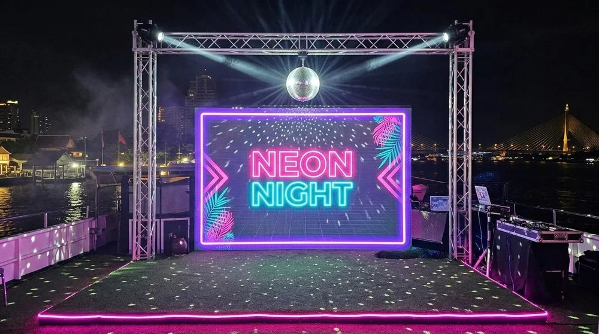

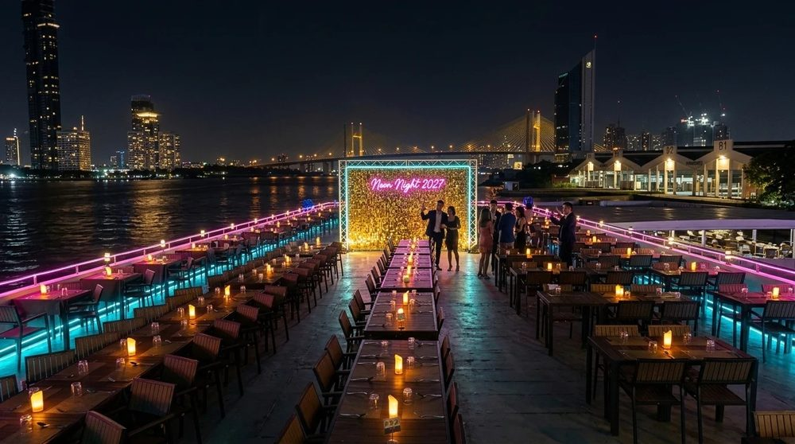

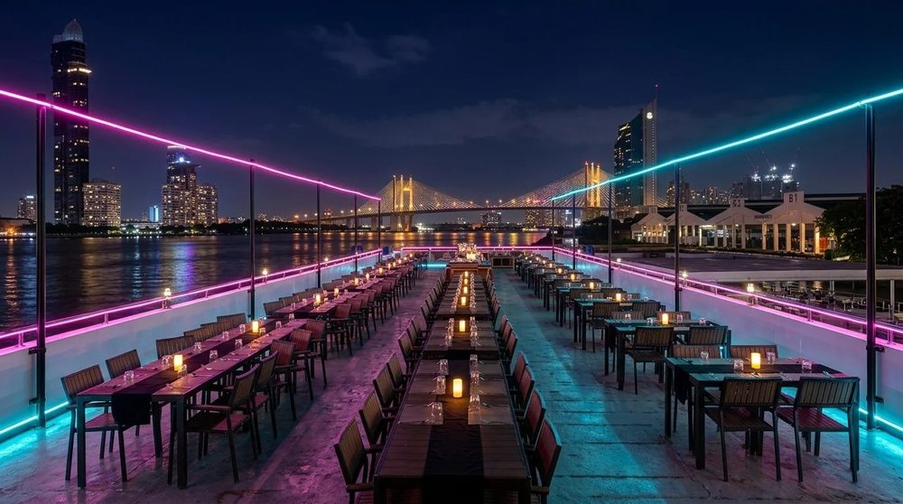

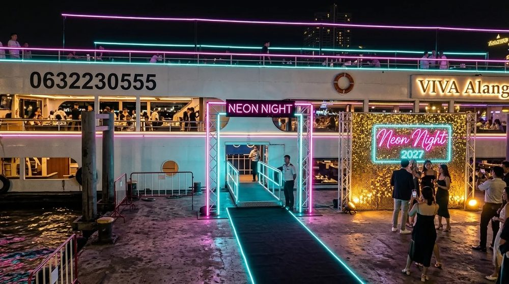

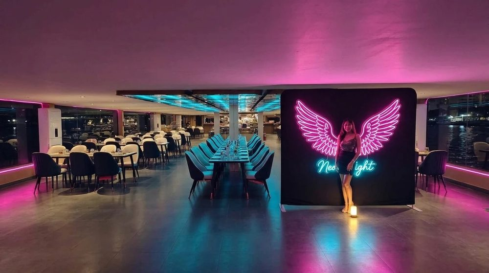

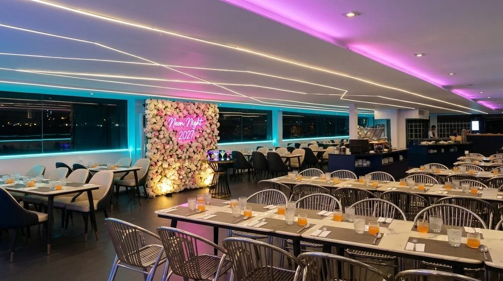
ต้องถามก่อนทำราคา
- เรือจ่ายไฟให้ได้กี่แอมป์ (ต้องการ ~61 A) ถ้าไม่พอใช้เครื่องปั่นไฟได้ไหม
- หนีบไฟนีออนกับราว และรัดตามขอบตัวเรือด้านนอกได้ไหม (ต้องโรยตัว/ใช้เรือเล็ก)
- ความสูงเรือจากน้ำจริง และต้องลดจอ LED ตอนลอดสะพานพุทธช่วงน้ำขึ้นไหม
- เวที+จอบนดาดฟ้าอยู่ฝั่งหัวเรือจริงไหม · ห้องแอร์ชั้น 1/2 เวทีอยู่หัวเรือไหม
- ปรับไฟฝ้าห้องแอร์เป็นชมพู/ม่วงได้ไหม · ไฟขอบชั้นของเรือเปลี่ยนสีได้ไหม (ถ้าได้ ตัดนีออนด้านนอกได้)
- ตั้งแบ็คดรอปชิดผนังหน้าห้องแอร์ที่หัวเรือได้ไหม (ป้ายรูปวัดอรุณของเรือ)
- ท่าเอเชียทีค: ตั้งซุ้ม ปูพรม ฉายโลโก้ และขอไฟ ~5 A · เวลาเข้าติดตั้ง
- ลูกค้า: วันงาน พ.ค. 2570 ใช่ไหม · เหมาทั้งลำหรือดาดฟ้า · โลโก้/ชื่องานจริง · งบประมาณ
หน้านี้เป็นแบบร่างภายใน (DRAFT-2) ยังไม่ได้ส่งลูกค้า · ภาพคอนเซ็ปทำด้วย AI จากรูปจริงของเรือ รายละเอียดเล็กอาจต่างจากของจริง ขนาดและจำนวนให้ยึดแบบ 3D/ผัง/BOQ